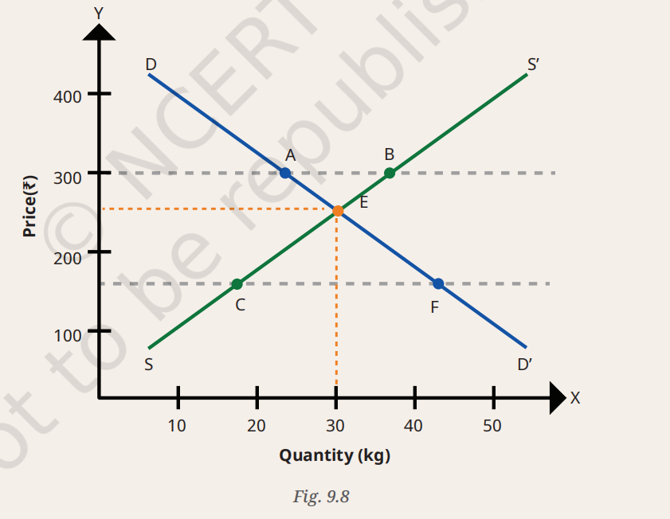

Social Studies class 9 The Price Puzzle: What Drives the Market
CHAPTER-9
(The Price Puzzle:
What Drives the Market)
Questions and Activities
1. An increase in income always leads to a rise in demand for goods. Defend or refute, giving reasons for the same.
Answer:
The statement is not always true. An increase in income generally increases the demand for normal goods, such as better clothing, electronics, and cars. However, the demand for inferior goods, such as low-quality products or cheaper substitutes, may decrease as people's income rises because they prefer higher-quality alternatives.
Therefore, an increase in income does not always lead to a rise in demand for all goods.
2. If petrol prices double, what happens to:
(a) Demand for diesel cars
Answer:
The demand for diesel cars is likely to increase because consumers may prefer vehicles with lower fuel costs compared to petrol cars.
(b) Demand for electric cars
Answer:
The demand for electric cars is likely to increase because they are more economical to operate when petrol prices rise.
(c) Demand for car accessories
Answer:
The demand for car accessories may decrease slightly because some consumers may postpone purchasing accessories while managing higher transportation expenses.
(d) Demand for public transport
Answer:
The demand for public transport is likely to increase as more people choose buses, trains, and metro services to reduce travel costs.
3. A farmer traditionally irrigates fields manually (labour-intensive). He installs drip irrigation (a technology upgrade) that reduces water use by 40 per cent and increases yield by 30 per cent. How does this affect:
(a) His cost of production
Answer:
The farmer's cost of production is likely to decrease over time because drip irrigation reduces water consumption, labour requirements, and wastage of resources, making production more efficient.
(b) His willingness to supply at different prices
Answer:
Since production becomes more efficient and profitable, the farmer will be more willing to supply larger quantities at different price levels.
(c) The overall market supply if many farmers adopt this technology
Answer:
If many farmers adopt drip irrigation, the overall market supply will increase because agricultural production will rise due to higher productivity and lower production costs.
4. During online festive sales, the prices of many products are very low. Use the concept of demand and supply to explain why the sellers sell at such a low price. What happens to the equilibrium when the price is lowered? Does this benefit only consumers or sellers as well? Explain.
Answer:
During festive sales, sellers reduce prices to increase demand and attract a larger number of customers. Lower prices encourage consumers to purchase more goods, helping sellers increase their sales volume and clear existing stock.
When the price is reduced below the original market equilibrium, the quantity demanded increases significantly. Sellers often increase supply during festive seasons to meet this higher demand, leading to a new market equilibrium with greater sales.
Benefits:
- Consumers benefit by purchasing products at discounted prices.
- Sellers benefit through higher sales, increased customer reach, faster inventory turnover, and greater overall revenue.
Therefore, festive discounts benefit both consumers and sellers.
5. Suppose the government sets a maximum sale price for an essential vaccine below the market-driven price. What is likely to happen?
Answer:
Correct Answer: (b) Shortage
When the government fixes a maximum price (price ceiling) below the market equilibrium price, the demand for the vaccine increases because it becomes more affordable. However, producers may reduce supply because they receive a lower price. As a result, the quantity demanded exceeds the quantity supplied, leading to a shortage in the market.
Questions and Activities
6. The government levies higher taxes on products such as tobacco and alcohol to promote healthier choices among citizens. Can you find out other goods where price controls have been set in place? What are the reasons for the same?
Answer:
The government imposes price controls on certain essential goods and services to protect consumers, prevent exploitation, and ensure their availability at affordable prices.
Examples of goods with price controls:
- Essential medicines under the National List of Essential Medicines (NLEM).
- Fertilizers supplied to farmers at subsidized prices.
- Liquefied Petroleum Gas (LPG) cylinders through government subsidy schemes.
- Electricity tariffs for domestic consumers in many states.
- Food grains such as rice and wheat distributed through the Public Distribution System (PDS).
Reasons for price controls:
- To make essential goods affordable for all citizens.
- To prevent black marketing and hoarding.
- To protect consumers from unfair price increases.
- To support economically weaker sections of society.
- To maintain price stability during emergencies or shortages.
7. Can excessive government regulation hurt markets? Explain with suitable examples.
Answer:
Yes, excessive government regulation can sometimes hurt markets if it becomes too restrictive. While reasonable regulations protect consumers and ensure fair competition, excessive control may reduce efficiency and discourage business activities.
Examples:
- Strict price controls may discourage producers from supplying goods, resulting in shortages.
- Excessive licensing and complex rules may discourage new businesses and investments.
- Heavy regulations may increase production costs and reduce competition.
- Unnecessary restrictions can slow innovation and technological development.
Example:
If the government fixes the price of an essential product much below its production cost, producers may reduce production because they cannot earn sufficient profit. This may lead to shortages in the market.
Therefore, governments should maintain a balance between regulation and market freedom so that consumers are protected while businesses are encouraged to produce efficiently and innovate.
8. In the table below, different prices of guava are given.
Answer:
The following is a sample table. Students' responses may vary depending on their preferences. The table illustrates the law of demand, which states that as the price decreases, the quantity demanded generally increases.
| Price | You (kg) | Friend 1 (kg) | Friend 2 (kg) | Friend 3 (kg) | Total (kg) |
|---|---|---|---|---|---|
| ₹100/kg | 1 | 1 | 1 | 1 | 4 |
| ₹80/kg | 2 | 2 | 2 | 2 | 8 |
| ₹50/kg | 3 | 3 | 4 | 3 | 13 |
| ₹20/kg | 5 | 5 | 6 | 5 | 21 |
Students should draw the required graphs on graph paper using the values given in the table.
9. Visit the nearby vegetable market and try to find answers to the following questions.
(a) Who decides the prices of different vegetables in the vegetable market?
Answer:
The prices of vegetables are mainly decided by the forces of demand and supply. Farmers, wholesalers, retailers, transportation costs, weather conditions, and market competition also influence vegetable prices.
(b) Sometimes the prices of a few vegetables are too high, and sometimes too low. Why is this?
Answer:
Vegetable prices change because the demand and supply of vegetables vary throughout the year. Factors such as seasonal production, weather conditions, transportation costs, festivals, and changes in consumer demand can increase or decrease prices.
(c) The price of tomatoes is high in the morning and eventually gets lower by the evening. Have you ever noticed this? Comment.
Answer:
Yes, this is commonly observed in many vegetable markets. In the morning, demand is usually high because many customers prefer to buy fresh vegetables early in the day. By evening, sellers often reduce prices to sell their remaining stock before it spoils, as tomatoes are perishable. Lower prices help them avoid losses and clear their inventory.
10. Categorise the following combination of goods into substitute goods and complementary goods.
Answer:
| Combination of Goods | Category | Reason |
|---|---|---|
| Movie ticket in the cinema hall and popcorn | Complementary Goods | They are often used together. The demand for popcorn increases when people go to watch a movie. |
| Eraser and pencil | Complementary Goods | Both are generally used together while writing or drawing. |
| Laptop and computer (desktop) | Substitute Goods | Both perform similar functions, and one can be used in place of the other. |
| Air Conditioner and cooler | Substitute Goods | Both are used to cool a room, so consumers may choose either one. |
| Notebook and pen | Complementary Goods | They are used together for writing. |
| Apple and banana | Substitute Goods | Both are fruits, and consumers may choose one instead of the other. |
| Mobile and earphones | Complementary Goods | Earphones are commonly used with mobile phones for calls and listening to music. |
11. Fig. 9.8 shows the demand curve DD' and supply curve SS'. Based on the figure, answer the following questions:
(a) What does point E represent in this market?

Image source- NCERT
Answer:
Point E represents the market equilibrium. It is the point where the demand curve (DD') and the supply curve (SS') intersect. At this point, the quantity demanded is equal to the quantity supplied, and there is neither a shortage nor a surplus in the market.
(b) What is the equilibrium price and equilibrium quantity at point E?
Answer:
- Equilibrium Price: ₹250
- Equilibrium Quantity: 30 kg
(c) Point A lies on DD'. Point B lies on SS'. What do the points A and B indicate about demand and supply? What does the gap between A and B (both on the upper dashed price line) represent?
Answer:
At the upper dashed price line (₹300):
- Point A shows that the quantity demanded is 23 kg.
- Point B shows that the quantity supplied is 37 kg.
Since the quantity supplied (37 kg) is greater than the quantity demanded (23 kg), there is an excess supply or surplus.
The gap between points A and B represents the surplus of 14 kg (37 kg − 23 kg).
(d) Point F lies on DD'. Point C lies on SS'. What do the points F and C indicate about demand and supply? What does the gap between C and F (both on the lower dashed price line) represent?
Answer:
At the lower dashed price line (₹160):
- Point F shows that the quantity demanded is 43 kg.
- Point C shows that the quantity supplied is 17 kg.
Since the quantity demanded (43 kg) is greater than the quantity supplied (17 kg), there is an excess demand or shortage.
The gap between points C and F represents the shortage of 26 kg (43 kg − 17 kg).
(e) If the price stays at the lower dashed line, what could happen next in a free market?
Answer:
If the price remains at the lower dashed line (₹160), the market will experience a shortage because the quantity demanded is greater than the quantity supplied.
In a free market:
- Consumers compete to buy the limited quantity available.
- Producers respond by increasing the supply.
- The increased demand pushes the price upward.
- The price gradually rises until it reaches the equilibrium price of ₹250, where demand and supply become equal.
Thus, market forces automatically move the price towards equilibrium.
12. Draw a market equilibrium graph using the following demand schedule.
(a) Plot the demand and supply curve using the above data.
Answer:
Students should draw the graph on graph paper using the following coordinates.
Demand Curve (D):
| Price (₹) | Quantity Demanded (kg) |
|---|---|
| 10 | 5 |
| 20 | 10 |
| 30 | 15 |
| 40 | 20 |
| 50 | 25 |
Supply Curve (S):
| Price (₹) | Quantity Supplied (kg) |
|---|---|
| 10 | 25 |
| 20 | 20 |
| 30 | 15 |
| 40 | 10 |
| 50 | 5 |
Plot the demand and supply points on the graph and join them to obtain the demand and supply curves. The point where both curves intersect is the market equilibrium.
(b) Identify the equilibrium price and quantity.
Answer:
The equilibrium occurs where the quantity demanded is equal to the quantity supplied.
| Price (₹) | Quantity Demanded (kg) | Quantity Supplied (kg) |
|---|---|---|
| 30 | 15 | 15 |
Equilibrium Price = ₹30
Equilibrium Quantity = 15 kg
(c) Observe the above data and analyse what happens if the price is set at ₹20 or ₹40.
Answer:
When the price is ₹20:
- Quantity Demanded = 10 kg
- Quantity Supplied = 20 kg
- Quantity Supplied is greater than Quantity Demanded.
- There is a surplus (excess supply) of 10 kg.
When the price is ₹40:
- Quantity Demanded = 20 kg
- Quantity Supplied = 10 kg
- Quantity Demanded is greater than Quantity Supplied.
- There is a shortage (excess demand) of 10 kg.
Thus, the market reaches equilibrium only at ₹30, where the quantity demanded equals the quantity supplied (15 kg).